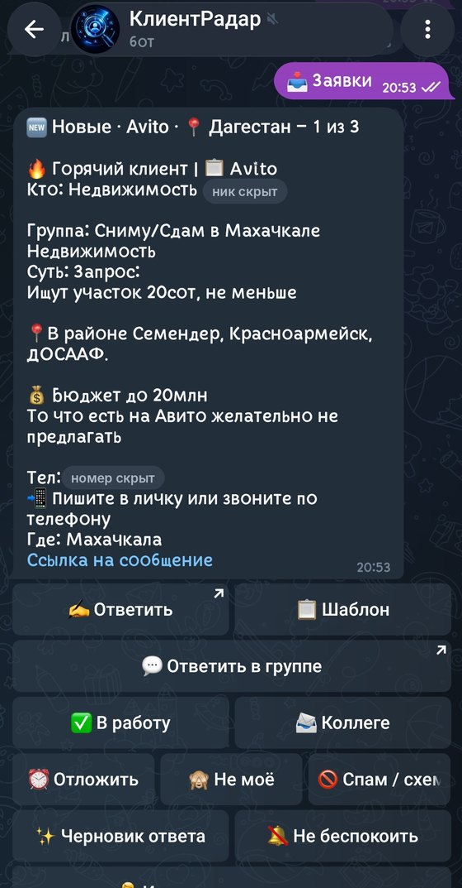
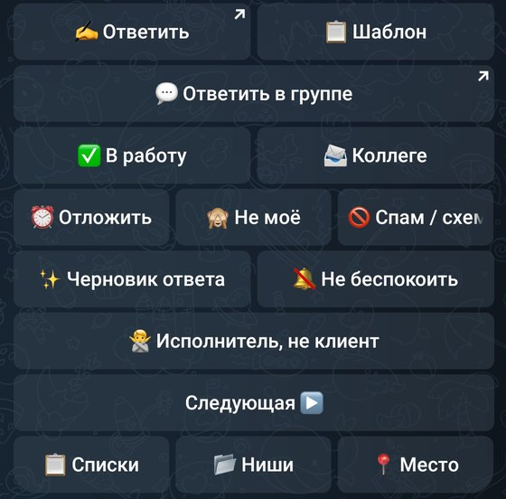
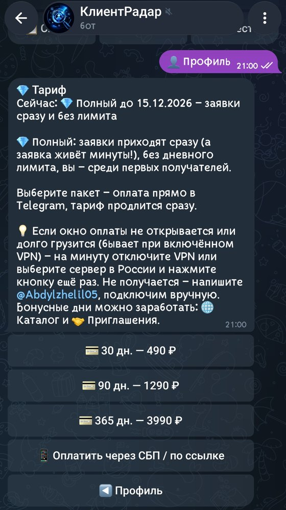
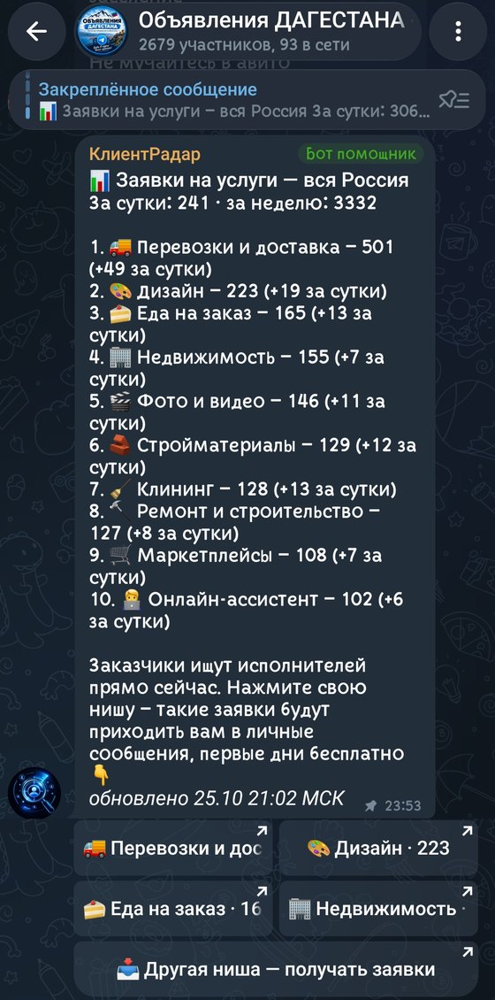
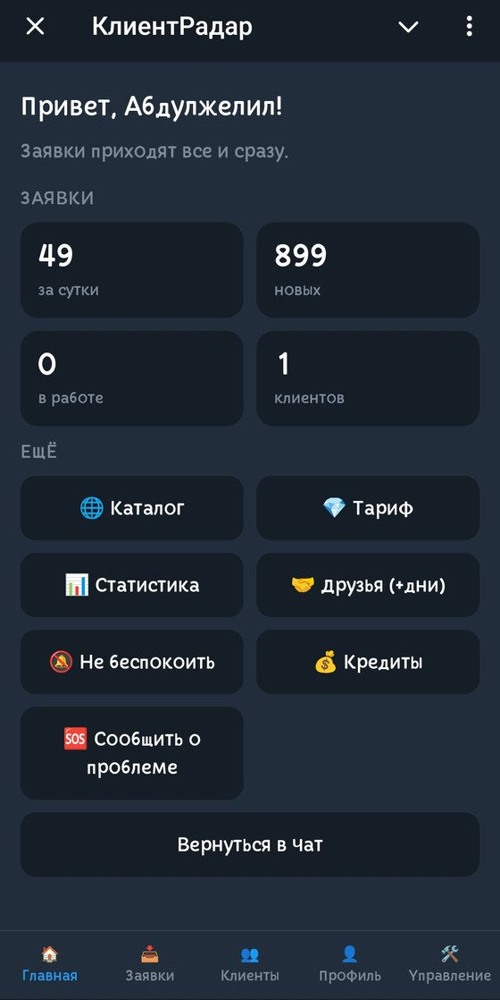
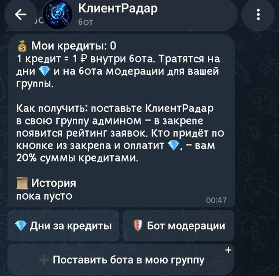
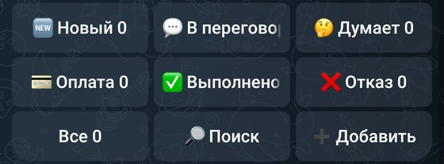
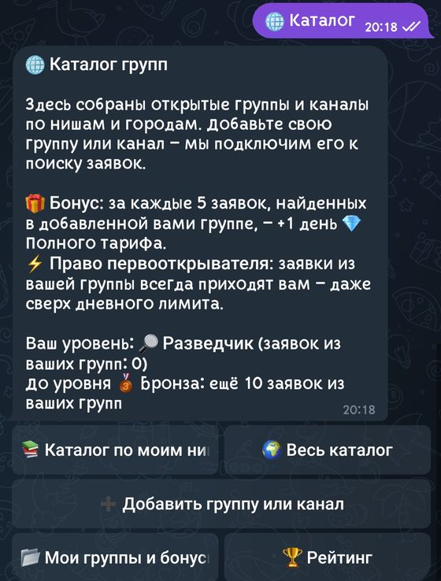

Находит заявки от клиентов в Telegram
КлиентРадар ищет людей, которым нужна ваша услуга, в Telegram-группах и каналах, присылает заявки и помогает вести клиентов — от первого сообщения до оплаты.
Бесплатно: до 5 заявок в день с задержкой 30 минут. Новым — 3 дня 💎 бесплатно. Выберите нишу и город — бот сразу покажет подходящие заявки за последние сутки, если они были.
- 📍 Сначала заявки из Дагестана
- ⚠️ Подсказывает о возможных схемах
- 🎁 3 дня полного тарифа бесплатно
Три шага до первых заявок
Откройте @klientradarbot, нажмите «Старт» и выберите свою нишу и город.
Бот сам находит в Telegram-группах людей, которые ищут исполнителя, и присылает вам их заявки.
Пишите им первым: скопируйте готовый ответ и отправьте его в группе или в личку.
Заявки из групп Дагестана и соседних регионов приходят в первую очередь, потом из остальной России.
Что внутри
75 готовых ниш
И поиск ниши по слову. Выберите свою нишу и город — остальное бот сделает сам.
Без лишнего мусора
Бот сам отсеивает рекламу мастеров, вакансии и спам.
Подсказка о схеме
Просят предоплату, перевод, крипту, код из СМС или зовут на чужой сайт — бот пишет «⚠️ Осторожно, возможна схема». Помогает заметить обман, но не гарантирует защиту.
Заявки по одной
Выберите нишу и место (Дагестан, Махачкала, Москва…) и листайте «Предыдущая / Следующая».
Ответ в один клик
Скопируйте готовый текст с вашими ценами и ответьте в группе. Бот сам клиентам не пишет — пишете вы.
Мини-CRM
Этапы сделки, заметки и напоминания — чтобы не терять клиентов.
«Не беспокоить» и «Тишина»
Паузу на час, день или неделю можно включить в любой момент, а ночью бот молчит. Заявки не пропадают.
Приглашения
Друг заходит по вашей ссылке — вам обоим +7 дней полного тарифа.
«Сообщить о проблеме»
Кнопка прямо в боте: если что-то не так, напишите, и вам ответят.
Как выглядит бот








Кому подойдёт
Мастера и специалисты
Электрики, мастера по ремонту, репетиторы, фотографы — те, кому нужны новые клиенты.
Агентства и студии
Недвижимость, сайты, реклама, юристы: ловите запросы в момент, когда человек ищет исполнителя.
Магазины и небольшой бизнес
Находите покупателей в городских группах и ведите их до оплаты в одной CRM.
Для администраторов групп
Рейтинг заявок в закрепе
Добавьте @klientradarbot в свою группу админом (с правом закреплять сообщения) — в закрепе появится рейтинг заявок вашего города и кнопки ниш. Ничего другого бот в группе не публикует; выключить рейтинг можно командой /rating off.
20% кредитами с оплат участников
С оплат участников, пришедших из вашей группы, вам 20% в кредитах (1 кредит = 1 ₽ внутри бота). Их можно обменять на дни полного тарифа или на бота модерации для вашей группы. Деньгами кредиты не выводятся. Первые 3 дня после оплаты участника (срок возврата) кредиты заморожены, потом доступны.
Каталог групп
Добавьте группу в каталог: +1 день 💎 за каждые 5 заявок из неё, а заявки из своей группы приходят вам всегда, даже сверх лимита. Для защиты группы есть отдельный бот Modexa.
Сколько это стоит
Бесплатный
До 5 заявок в день с задержкой 30 минут. Своя CRM, ниши и город. Новым — 3 дня 💎 бесплатно (один раз), за день до конца бот напомнит.
💎 Полный
Все заявки сразу и без лимита. Дольше — выгоднее: 1290 ₽ за 90 дней (≈430 ₽ в месяц), 3990 ₽ за год (≈333 ₽ в месяц).
Оплата в боте: картой или по СБП, возврат в течение 3 дней. Автопродление по желанию, карту можно отвязать одной кнопкой.
Откройте бота и выберите «Профиль» → «💎 Тариф»: оплата проходит прямо в Telegram.
Частые вопросы
Откуда берутся заявки?
Бот читает открытые Telegram-группы и группы, куда его добавили, и присылает сообщения людей, которые ищут исполнителя, — по вашей нише и городу. В группах бот пишет только рейтинг заявок в закрепе — и только если админ дал ему это право.
Бот пишет клиентам?
Нет. Бот сам клиентам не пишет: вы копируете готовый ответ и отвечаете сами — в группе или в личку.
Бот собирает данные людей?
Бот не собирает номера телефонов и закрытые переписки. Из открытых сообщений сохраняется текст заявки, имя и публичный ник автора — не дольше 90 дней. Удалить свои данные можно командой /deleteme; автор сообщения в группе может написать @Abdylzhelil05, и его данные удалят. Текст сообщения (без имени, ника и ID автора) может проверяться ИИ GigaChat (Сбер), чтобы отсеять рекламу и спам.
Сколько стоит полный тариф?
Полный тариф 💎: все заявки сразу и без лимита — 490 ₽ на 30 дней, 1290 ₽ на 90 дней и 3990 ₽ на год. Бесплатно: до 5 заявок в день с задержкой 30 минут. Новым — 3 дня 💎 бесплатно. Оплата картой или по СБП, возврат в течение 3 дней.
Что если заявок будет мало?
Если за неделю пришло меньше 10 заявок, бот сам добавит 7 дней. Деньгами это не компенсируется. Конкретное число заявок мы не обещаем: оно зависит от ниши и города.
Можно отключить автопродление?
Автопродление включается по желанию. Привязанную карту можно отвязать одной кнопкой: «💎 Тариф» → «🗑 Отвязать карту».
Что получает админ группы?
В закрепе группы появится рейтинг заявок вашего города и кнопки ниш. С оплат участников, пришедших из вашей группы, вам 20% в кредитах (1 кредит = 1 ₽ внутри бота): их можно обменять на дни полного тарифа или на бота модерации. Деньгами кредиты не выводятся.
Как выбрать, какие заявки получать?
При старте вы выбираете нишу и город. Слова, минус-слова, режим «Тишина» и «Не беспокоить» настраиваются в боте.
Можно ли передать заявку коллеге?
Да, кнопка «📨 Коллеге» на карточке заявки отправляет её другому пользователю бота.
Начните получать заявки
Выберите нишу и город — бот начнёт присылать подходящие заявки.